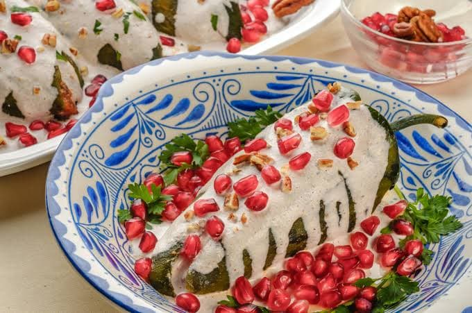

- 4 Chiles poblanos
- 1 Taza de granada
- Para el relleno 1/2 kg de carne molida de res sin grasa
- 1 Diente de ajo picado
- 1/2 Cebolla blanca
- 1 Pera
- 1 Durazno
- Perejil
- 12 Almendras fileteadas
- 30 g de piñón
- Para la nogada Canela molida
- 50 g de nuez de castilla
- 500 ml Leche
- 300 g Requesón
Chiles en nogada
- Asar en el comal y por ambos lados los chiles.
- Cuando esten bien asados ponerlos en una bolsa ziploc, cellar bien y recervar durante 15 minutos.
- Pasado el tiempo retirar los chiles y retirar la piel quemada.
- Desvenar los chiles y dejar de lado.
- Para el relleno, en una olla a fuego y con aceite agregar la cebolla y el ajo y dejar marinar durante 15 minutos.
- Picar la fruta en trozos pequeños y agregar junto al resto de los ingredientes.
- Para la nogada mezclar todos los ingredientes en la licuadora y agregar poco a poco la leche.
- Licuar todos los ingredientes hasta obtener una mezcla homogénea.
- Servir el chile y decorar con la granada y el perejil.